A quick and very rough guide
What is Loom?
Loom is a Scala based drawing engine. Loom can do a range of things. It can display 2D and 3D images, play audio, respond to serial input, etc. Any particular instantiation shapes a 'sketch', with its own subdirectory in the project and its own version of the 'MySketch' file.
Developing from work I did a decade ago, Loom 2022 focuses on polygonal subdivision. It subdivides simple 2D geometrical shapes to produce more complex shapes. These shapes become sprites that are positioned on screen for drawing. Animation is possible but options are currently very limited. My interest has been in recursive subdivision, the transformation of created shapes and their high resolution rendering (as stills). There is scope for 2D shapes to gain an additional z dimension, but this requires maintenance - and really should begin with dedicated 3D models rather than simply adding depth data to 2D planes.
Loom represents, for me, an exploratory space. I've left it without any GUI so that it can evolve organically as a piece of code and conceptual invention. My aim here is less to finalise the project than to provide a snapshot, indicating its key operations and features. The whole thing has become so complex that I need a guide for myself so that I don't lose track of how it works. This is a minimal and largely private overview. So be warned!
One final introductory point. Loom is scarcely a conventionally useful bit of graphics software. Normally subdivision provides a means of modelling further detail in shapes. Here it simply produces visual patterns - curiously rendered drawings of geometry and things. Recently, however, I've come across a possibly use. Loom would work well for geometrically stylised UV mapping. The polygon sets could represent UV maps and subdivision could 'paint' the maps.
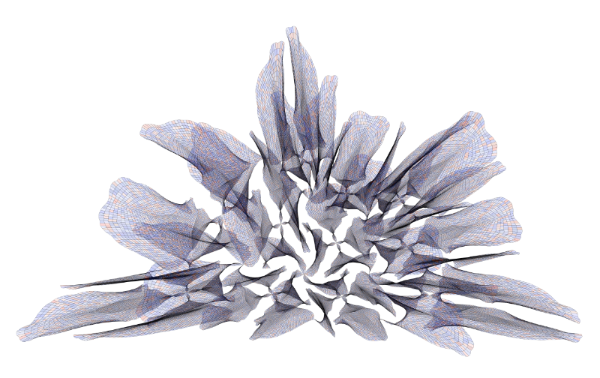
sbt command to run SBT: sbt -J-Xmx2G (note extra flag setting larger heap size)run Subdivide config_default.xml to run Loom. This runs the 'Subdivide' sketch, taking some basic configuration settings from the 'config_default' xml file in the 'Subdivide' sketch subdirectory.<?xml version="1.0" encoding="ISO-8859-1"?>
<!DOCTYPE polygonSet SYSTEM "../../dtd/polygonSet.dtd">
The Loom project folder contains:
clean command every often in SBT to get rid of old project builds, which can rapidly accumulate and take up a lot of space.My focus is on how 2D spline based polygonal subdivision is conceived within Loom 2022.
Polygons are composed of splines. A rectangle, for example, is composed of four splines - one for each line in the shape. Each spline is composed of four points - two anchors at either end and two associated control points, which control the curvature of the line. I guess you could create a polygon with just two splines, but we tend to begin with three or more splines (sides). So, as I say, a rectangle is composed of four splines, which has 16 points altogether. The final anchor point on each spline has a sibling (and a shared location) that is the origin anchor point on the first spline.
The overall geometrical hierarchy is has points at the base, then splines that are composed of four points, polygons that are composed of splines and then polygon sets that are composed of one or more polygons. Beyond this we also have collections of polygon sets, but more on that later.
The subdivision of polygons can take many forms, but I have only implemented two:
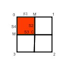
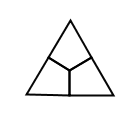
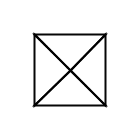
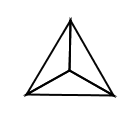
These two methods are pretty straightforward really. Where the complexity comes in lies in a number of factors:
So far I have been using the term 'shape' informally, but within the system there is a distinction made between shapes and sprites. Shapes are conceived as abstract containers for sets of polygons. Shapes are concretely realised in sprites that have a position on screen and that can be transformed, animated and rendered. The subdivision process is applied to the shape (to expand the set of polygons) before sprites are created. You can actually bypass subdivision altogether if you like and just employ the basic polygons from Bezier Draw. This facilitates much speedier display and rendering.
Overall, here is the overall process:
The following details go into a configuration file, 'confi_default.xml', which is located in Loom/sketches/Sudivide/config.
Note to self: move all of this into a start screen via JavaFX/Electron, whatever.
The main code that you will be dealing with MySketch.scala contained in 'mysketch' directory of src/main/scala/org/loom.
Here is where you define renderers, polygon sets, subdivision parameters, etc. This is also the place that contains the main update and draw loop. You will most likely have to check other pieces of code now and then, but you should aim to get most things done in MySketch.
Individual renderers, which define features such as the rendering mode (points, lines, filled, etc.) and associated line widths, colours, etc., can be combined into named sets. These sets are themselves added to an overall library of renderer sets.
Rendering is called from Sprite2D.
The MySketch constructor calls an internal method, makeRendererSetLibrary, which is where renderers get added to rendererSets and then the sets get added to the rendererSetLibrary.
You only need to modify fields that differ from the defaults defined in Renderer, RendererSet and RendererSetLibrary. All of these fields are defined below.
Here are the field associated with individual renderers:
Firstly there are parameters that are passed in when the renderer is created:
Following these basic Java2D parameters, there are a large number of internal fields linked to ways that features of rendering can be modified either in sequence or randomly for each polygon in a polygonSet. So, for instance, the strokeWidth value could gradually increase for each polygon drawn, or a random mode of rendering could be selected for each polygon, etc.
Important to note that all of these changes happen at the level of the individual renderer. It is also possible vary rendering at the level of the renderSet, but more about this soon.
These determine whether modification of the point happens when renderer is called (from sprite2D).
Points are drawn as Ellipse2Ds. This means they are essentially little circular shapes (perfect or oblong). They are defined by the size of the shape (width and height) and by standard rendering parameters (strokeWidth, strokeColor, fillColor).
Note that the pointColor is not the same as the strokeColor. The pointColor relates to the filled state of any Ellipse2D, not the stroke (outline).
Alongside all the potential changes to individual renderers, it is also possible include rendering changes at the level of rendererSets.
A rendererSet is composed of a set of indiviudal renderers. You can select sequentially or randomly from rendererSets. So you may have red, yellow and blue renderer and you can move between them in looping sequence as you render polygons, or select from the pool randomly. Furthermore, you can combine these set level changes with the modification of individual renderer parameters, so that the red renderer, for instance, could cycle through a range of shades, or radically shift modes, etc.
Mainly, rendererSets are useful in terms of defining a limited palette of renderers that can be managed as a group.
Each RendererSet takes a name (String) as a parameter.
Here are the rendererSet fields:
This is the overall collection of rendererSets. It is possible to access sets in sequence or randomly. Need to consider carefully at what level you want to manage change. Probably easiest to begin at renderer level, then move up to rendererSets when that makes sense, and only finally to switching between rendererSets in the library.
The library itself has a name (String) as parameter when created.
Note that you tend to access rendererSets by name, but they can also be accessed by index.
Here are the rendererSetLibrary fields:
Although it is possible engage with all of these fields across all these different levels of the rendering architecture directly, it is much easier to interact with the complex set of Renderer and RendererSet fields particularly via a set of convenienct methods that are assembled in a long comment at the top of makeRendererSetLibrary.
setChanging(changeType: Int) (Renderer.SEQUENCE or Renderer.RANDOM: required for changing and to specify type of change (sequential or random), otherwise renderer is static)Mode
setChangingMode(modes: List[Int]) (define list of modes to be either sequentially or randomly selected depending on changeType parameter to setChanging())Points
setChangingPointStrokeWidth(increment: Float, multiplier: Double, multiplierRange: Range) (either sequential or random depending on setChanging() value)setChangingPointColor(colorMinList: List[Int], colorMaxList: List[Int], colorIncrementList: List[Int]) (set RGBA values sequentially or randomly depending on setChanging() value)setChangingPointSize(increment: Float, multiplier: Double, multiplierRange: Range) (set size of Ellipse2D sequentially or randomly depending on setChanging() value)Stroke Width
setSequentiallyChangingStrokeWidth(increment: Float, min: Float, max: Float) (only happens if setChanging set to sequential)
setRandomlyChangingStrokeWidth(range: Range) (only happens if setChanging set to random)
Stroke Color
setSequentiallyChangingStrokeColor(min: List[Int], max: List[Int], increments: List[Int]) (only happens if setChanging set to sequential)
setRandomlyChangingStrokeColor(RGBA_ranges: List[Range]) (only happens if setChanging set to random)
Fill Color
setSequentiallyChangingFillColor(min: List[Int], max: List[Int], increments: List[Int]) (only happens if setChanging set to sequential)setRandomlyChangingFillColor(RGBA_ranges: List[Range]) (only happens if setChanging set to random)Convenience Methods for Configuring Render Sets
Specify if sequential or random selection change within set and whether or not renderers can modify their internal fields.
modifyRenderers() (enables individual renderers to modify their parameters)sequenceRendererSet(preferred: Int, prob: Double) (preferred renderer index in set, probability that preferred is chosen)randomRendererSet(preferred: Int, prob: Double)And here is an example of how makeRendererSetLibrary can be managed via the use of these methods,
def makeRendererSetLibrary(n: String): RendererSetLibrary = {
//CREATE OVERALL LIBRARY
val renderSetLibrary: RendererSetLibrary = new RendererSetLibrary(n)
//CREATE A NEW RENDERER SET
val renderSetA: RendererSet = new RendererSet("BlueOrangeGreenFilled")
//CREATE A NEW RENDERER WITH CHANGING POINT PARAMETERS
val rendererBlue: Renderer = new Renderer("Blue", Renderer.POINTS, defaultLineWidth, Renderer.BLACK, Renderer.BLUE)
rendererBlue.setChanging(Renderer.SEQUENCE)
rendererBlue.setChangingPointStrokeWidth(1, 2, new Range(1,5))//increment, multiplier, range)
rendererBlue.setChangingPointColor(List(0,0,0,0), List(255,255,255,255), List(15,1,1,10))//minList, maxList, incrementList - all RGBA
rendererBlue.setChangingPointSize(1, 2, new Range(1,5))
renderSetA.add(rendererBlue)//ADD RENDERER TO SET
//CREATE ANOTHER RENDERER WITH SOME CHANGING LINE PARAMETERS
val rendererOrange: Renderer = new Renderer("Orange", Renderer.LINES, defaultLineWidth, Renderer.BLACK, Renderer.ORANGE)
rendererOrange.setChanging(Renderer.SEQUENCE)//must call this method to enable changing renderer values, and must specify either sequential or random change
rendererOrange.setChangingMode(List(Renderer.LINES, Renderer.FILLED, Renderer.FILLED_STROKED))//changes sequentially or randomly based on setChanging parameter
rendererOrange.setSequentiallyChangingStrokeWidth(.1f, .1f, 1f)//increment, min, max (note: must have setChanging to sequential for this method to work
renderSetA.add(rendererOrange)//ADD RENDERER TO SET
//CREATE A THIRD RENDERER (FILLED_STROKED, BLACK LINES, GREEN FILL) WITH DEFAULT STATIC VALUES AND ADD TO SET
renderSetA.add(new Renderer("Green", Renderer.FILLED_STROKED, defaultLineWidth, Renderer.BLACK, Renderer.GREEN))
//DIRECTLY DEFINING SOME RENDERER SET FIELDS
renderSetA.getRenderer("Blue").randomFillColorRange = List(new Range(10, 30), new Range(40, 70), new Range(100, 150), new Range(230, 255))
renderSetA.getRenderer("Orange").randomFillColorRange = List(new Range(160, 240), new Range(40, 90), new Range(10, 30), new Range(20, 150))
renderSetA.getRenderer("Green").randomFillColorRange = List(new Range(10, 30), new Range(90, 150), new Range(40, 70), new Range(20, 60))//NOTE: THIS WILL NOT HAPPEN BECAUSE 'GREEN' IS NOT SETCHANGING()
renderSetA.setPreferredRenderer("Orange")
renderSetA.setCurrentRenderer("Blue")
renderSetA.modifyRenderers()//allows individual renderers to vary their parameters (otherwise they are static)
renderSetA.randomRendererSet(1,100)//preferred renderer index, preferred probability
//ADD THE RENDERER SET TO LIBRARY
renderSetLibrary.add(renderSetA)
renderSetLibrary.setCurrentRendererSet("BlueOrangeGreenFilled")
renderSetLibrary.setPreferredRendererSet("BlueOrangeGreenFilled")
renderSetLibrary//RETURN LIBRARY
}
These omponents contribute to visible output:
Rather than dealing with single polygons, we define polygon sets that together compose an overall shape. These are created in Bezier Draw (as discussed above). Of course, a polygonSet can be just one polygon, so need for complexity if not needed. The polygonSet just provides a container for one or more polygons to be subdivided, animated and rendered.
We are not restricted to a single set of polygons. Multiple named polygonSets can be added to the PolygonSetCollection.
See MySketch/loadPolygonCollection method for how to add polygonSets to the PolygonSetCollection.
The call to add a polygonSet calls PolygonSetLoader, which can load either line or spline based polygons. We are typically loading the latter. We then specify the sketch name ("Subdivide"), the relevant subdirectory in resources ("polygonSet"), the xml file the defines the shape, and provide a name for the polygonSet.
Keep in mind that this is collection of abstract geometry that must be made into transformable and subdivisable shapes before being made into screen visible sprites.
loadPolygonCollection() example
def loadPolygonCollection(): PolygonSetCollection = {
val polyCollection: PolygonSetCollection = new PolygonSetCollection()
//polyCollection.add(new PolygonSet(PolygonSetLoader.loadSplinePolygons("Subdivide", "polygonSet", "square_good_centred.xml"), "Square"))//make sure to set name in make2DShapes!
//polyCollection.add(new PolygonSet(PolygonSetLoader.loadSplinePolygons("Subdivide", "polygonSet", "SixteenSides_Centred.xml"), "Sixteen"))
polyCollection.add(new PolygonSet(PolygonSetLoader.loadSplinePolygons("Subdivide", "polygonSet", "TRIANGLE.xml"), "Triangle"))
//polyCollection.add(new PolygonSet(PolygonSetLoader.loadSplinePolygons("Subdivide", "polygonSet", "BERG_GOOD.xml"), "Berg"))
polyCollection
}
After the PolygonSetCollection is created, the next thing that happens is the creation of subdivision parameters, but better to delay that discussion until we have completed our consideration of polygons, shapes and sprites. The reason why subdivision parameters are created next is because they need to be passed into the constructor for the list of Shapes alongside the polygons. So permit me to deal with shapes and sprites before turning to the details of subdivision.
The creation of the "shapes" ListBuffer happens in the MySketch/make2DShapes method. There is a corresponding make3DShapes method that is close to ready but needs some tweaking in the light of recent changes. The only difference with the latter is that it adds a notional "z" to the 2Ds "x" and "y", placing the "z" value at 0 prior to any transformation. All shapes represent flat surfaces currently whether represented in 2D or 3D terms.
As I say, the make2DShapes method simply creates a ListBuffer of shapes composed of the polygonSets and corresponding subdivision parameters.
make2DShapes() example
def make2DShapes(): ListBuffer[Shape2D] = {
val shapes: ListBuffer[Shape2D] = new ListBuffer[Shape2D]
//shapes += new Shape2D(polyCollection.getPolySet("Square").polySet, subdivisionParamsSetCollection.getParamsSet("subPSetA"))//polySet is an internal field of PolygonSet that holds set as List[Polygon2D], which is needed for Shape
//shapes+= new Shape2D(polyCollection.getPolySet("Sixteen").polySet, subdivisionParamsSetCollection.getParamsSet("subPSetA"))
shapes+= new Shape2D(polyCollection.getPolySet("Triangle").polySet, subdivisionParamsSetCollection.getParamsSet("subPSetA"))
//shapes += new Shape2D(polyCollection.getPolySet("Berg").polySet, subdivisionParamsSetCollection.getParamsSet("subPSetA"))
shapes
}
The shape gemoetry is then recursively subdivided on the basis of the relevant subdivision parameters. So a single square polygon may become, for instance, a grid of 100 polygons, etc.
Once this process is complete then the shapes are realised as sprites that have a position on screen and that can be animated and rendered.
Sprites are initialised with this set of default values (that can always be modified):
The animation variables 10, 11 and 12 are clearly very basic. Need to implement a keyframe system with tweening interpolation curves.
Note, you will find key rendering algorithms in Sprite2D.
make2DSpriteList() example
def make2DSpriteList(): List[Sprite2D] = {
val defaultSpriteParams: Sprite2DParams = new Sprite2DParams("defaultSpriteParams")
defaultSpriteParams.sizeFactor = .9
//create an animator based on the above parameters
val animator2D: Animator2D = new Animator2D(true, defaultSpriteParams.scaleFactor2D, defaultSpriteParams.rotFactor2D, defaultSpriteParams.speedFactor2D)
val animator2DA: Animator2D = new Animator2D(true, defaultSpriteParams.scaleFactor2D, defaultSpriteParams.rotFactor2D, defaultSpriteParams.speedFactor2D)
val animator2DB: Animator2D = new Animator2D(true, defaultSpriteParams.scaleFactor2D, defaultSpriteParams.rotFactor2D, defaultSpriteParams.speedFactor2D)
//create a sprite from the shape, initial parameters, animator and renderer
val sprite2D: Sprite2D = new Sprite2D(subdividedShapes(0).asInstanceOf[Shape2D], defaultSpriteParams, animator2D,renderSetLibrary.getRendererSet("BlueOrangeGreenFilled"))
//val sprite2DB: Sprite2D = new Sprite2D(subdividedShapes(1).asInstanceOf[Shape2D], defaultSpriteParams, animator2D,renderSetLibrary.getRendererSet("RedAndBlueFilled"))
List(sprite2D)
}
Subdivision is the process of calculating a number of subsidiary polygons from an overall polygon. QUAD subdivision, for instace, takes any regular or irregular polygon and breaks it up into 4 sub-polgons in terms of rules that I have described earlier. It then returns those 4 polygons in place of the original polygon.
Subdivision is structured recursively so that it be pursued down multiple iterations, producing more and more polygons in place of the original, relatively simple shape.
Sudivision can be applied to either line and spline based polygonal shapes (not a mix of the two).
Line based subdivision includes a large number of subdivision modes (please refer to "Loom Technical Development" pdf in the tutorials folder of the overall project directory for furthe info).
Here my focus will be on spline based subdivision, which only enables quad and tri based subdivision (decomposition into 4 or 3 sided polygons), but to make up for this enables powerful means of transforming these new polygons at the global, polygonal and point level.
Subdivision has a similar tri-level structure as rendering and polygonal management. A SubdivisionParamsSetCollection holds a collection of subdivision parameters sets, which in turn holds a number of subdivision parameters. A shape and its associated sprite have a set of subdivision parameters. Collections enable multiple shape/sprites with different subdivision parameter sets. Sets are named, as are individual subdivision parameters, but the collection is singular and does not need its own name.
So we start by initialising the overal collection and then create and add sets of subdivision parameters.
The createSubdivisionParamsSetCollection method in MySketch references all the fields in SubdivisionParameters to make these fields visible to the end user. It overrides the default values in SubdivsionParamters. But it is probably easier to get a handle on the paramters within SubdivisionParameters because MySketch employs abbreviated field names and provides less explanatory information.
At the programming level, it is worth noting that there is the Subdivision class itself, which has an associated object with a large number of methods, and there is the SubdivisionParameters class, which is like a public interface to the Subdivision instance and object. It is stores many of the fields pertinent to subdivision.
It is also worth noting that the revised, spline based system adopts a modular approach. Instead of storing multiple modes of subdivision within a single Subdivision object, it employs separate and dedicated SplineQuad and SplineTri classes to handle subdivision. This will make it easier to maintain the code, facilitating a plugin style architecture for incorporating new subdivision modes. This was necessary because spline based subdivision is significantly more complex than line based subdivision and was producing serious bloat in the main Subdivision class/object, as well as long, overly complex and confusing methods.
Whole polygon level and point level tranformations are managed by PolysTransform and PointsTransform classes that are instantiated in the subdivision classes (SplineQuad and SplineTri), and that draw their parameters from the subdvision parameters and, in the case of point transforms, the various Transform classes.
As I explain, the SudivisionParameters object provides the main interface to the subdivision process, so let's now run through its extensive set of fields.
Important to understand that each stage of subdivision can have its own independent subdivision parameters. So you can begin, for instance, with QUAD subdivision and then switch at the next recursive stage to TRI subdivision. Any actual subdiviosion process is informed then typically by a list subdivision parameters that correspond to each subdivision stage.
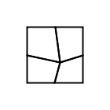
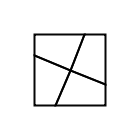
new Transform2D(new Vector2D(0, 0), new Vector2D(.5, .5), new Vector2D(0, 0)), which halves the size of the internal echoed shape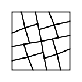
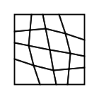
visibilityRule: Int (polygons can be visible or invisible) - default is ALL. The Subdivision object stores a number of rules for the visibility of polygons created through subdivision):
ALL
QUADS
TRIS
ALL_BUT_LAST
ALTERNATE_ODD
ALTERNATE_EVEN
FIRST_HALF
SECOND_HALF
EVERY_THIRD
EVERY_FOURTH
EVERY_FIFTH
RANDOM_1_2
RANDOM_1_3
RANDOM_1_5
RANDOM_1_7
RANDOM_1_10
This QUAD subdivision follows the ALTERNATE_ODD rule. Polygons 1 and 3 are visible.
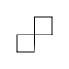
The more specific subdivision parameters relate to the various ways that polygons produced via subdivision can be transformed. Transformations can occur at the level of overall (whole) polygons or at the level of sets of points within polygons. The extent of transformation is affected by probability fields, which take percentage values to shape the likelihood of any particular transformation ocurring.
Whole polygon transformations typically involves the randomisation of aspects of translation, scale and rotation.
Note that the "pTW" prefix on these fields stands for "polygon transform whole".
new Transform2D(new Vector2D(0, 0), new Vector2D(0, 0), new Vector2D(0, 0))new RangeXY(new Range(0,0), new Range(0,0))new RangeXY(new Range(1,1), new Range(1,1))new Range(0,0)Point level transformations are handled through a plugin architecture, in which various classes that inherit from the abstract "Transform" class are added to an ArrayBuffer of Transforms ("transformSet"). The buffer is then converted to a fixed array ("pTP_transformSet"), which serves as the hub for iteratively performing a variety of point transforms (all those that have been added to the buffer).
The various transforms are targetted at specific sets of points. Here is the set of currently available transforms.
There are a number of fields within these transforms that can be accessed to modify point transformation. This is done once the transforms are instantiated within the context of defining subdivision paramters in the MySketch/createSubdivisionParamsSetCollection method. I will describe these fields after I deal with the point transformation fields that are directly available within SubdivisionParameters.
The prefix "pTP" stands for "polygon transfrom points".
These fields are not directly visible in MySketch. They are accessible but not directly refeerenced. Each time you create a Transform instance and set it to TRUE then it will run with the default value described in the relevant Transform class. So you will need to refer to the information here or to the Transform classes themselves to discover the internal fields.
Many of the Boolean fields are mutually exclusive (they belong in radio groups), so you may need to negate any that you don't want to be true that are by default true and adjust those that are by default set to false.
Note that the easiest way to modify the transforms is by the convenience methods described in relation to each of the five transforms below. They enable specific modificaitons and handle all the background complexity of ensuring boolean fields are properly in synch.
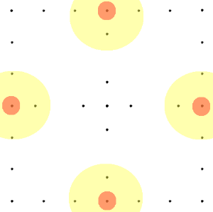
MySketch/createSubdivisionParamsSetCollection method is FALSE (switching off this transformation)'Tear' direction
'Tear' amount
new Range(-.2, .2)Control points follow (or not)
new Range(-1.5, 1.5)Convenience Methods
adjustStandardFields (p: Double, tF: Double, cpsF: Boolean, cpsFM: Double, rCPSFollow: Boolean, rCPSFollowMultiplier: Range) (probability, tearFactor, controlPointsFollow, follow multiplier, random follow, random follow multiplier)setTearType(tearType: Int) (AnchorsLinkedToCentre.OUTSIDE_CORNER, ...OPPOSITE_CORNER, ...CENTRE, ...RANDOM)setRandomTearFactor(f: Range) (random tear amount)setRandomCPsFollow(f: Range) (random control points follow multiplier range)Anchors Linked to Centre Transform createSubdivisionParamsSetCollection() example
This focuses on the central anchor and control points, but also provides scope to shift all remaining points either in the direction that the central points have moved or in the opposite direction.
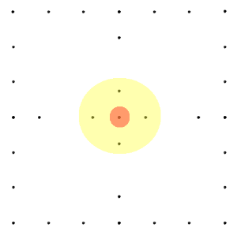
MySketch/createSubdivisionParamsSetCollection method is FALSE (switching off this transformation)'Tear' axes
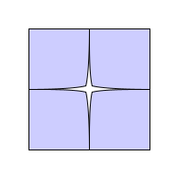
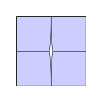
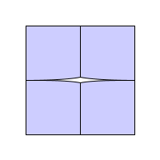
(Tear XY, X and Y)
'Tear' direction
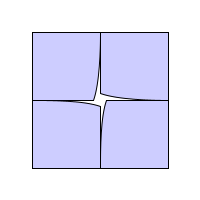
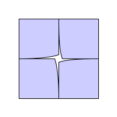
(Tear Left and Right) Viewing from Centre looking out.
'Tear' amount
new Range(-.2, .2)Control point follow (or not)
new Range(-1.5, 1.5)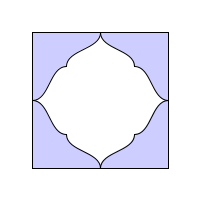
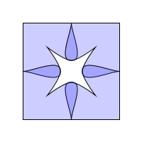
(Control Points Follow Positive 1, Control Points Follow Negative 1)These last two fields can produce unpredictable and surprising results.
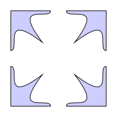
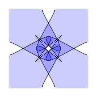
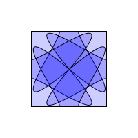
(CentralAnchors_tearXY_diagonal_.2_cpsFollow_5_allPointsFollowCentre, CentralAnchors_tearXY_diagonal_.2_cpsFollow_-7_allPointsFollowCentre, CentralAnchors_tearXY_diagonal_5_cpsFollow_5_allPointsFollowCentre_invertedFollowCentre)
Convenience Methods
adjustStandardFields (p: Double, tF: Double, cpsF: Boolean, cpsFM: Double, all: Boolean, inv: Boolean) (probability, tearFactor, controlPointsFollow, follow multiplier, all points follow CA vector, all points go opposite vector)setTearType(tearType: Int) (CentralAnchors.TEAR_XY, ...TEAR_X, ...TEAR_Y, ...RANDOM_TEAR_TYPE)setTearDirection(tearDirection: Int) (CentralAnchors.TEAR-DIAGONAL, ...TEAR_LEFT, ...TEAR_RIGHT, ...RANDOM_TEAR_DIRECTION)setRandomTearFactor(f: Range)setRandomCPsFollow(f: Range) (multiplier range)Central Anchors Transform createSubdivisionParamsSetCollection() example
Here is just the relevant portion of the method relating to central anchors transform.
var centralAnchors: CentralAnchors = new CentralAnchors(true)
//convenience methods for adjusting centralAnchors fields
centralAnchors.adjustStandardFields (100, -.1, true, 3, true, false) //probability, tearFactor, control points follow, cps multiplier, all points follow, inverted following)
centralAnchors.setTearType(CentralAnchors.TEAR_Y)//TEAR_XY, TEAR_Y, RANDOM_TEAR_DIRECTION
centralAnchors.setTearDirection(CentralAnchors.TEAR_DIAGONAL)
centralAnchors.setRandomTearFactor(new Range(-.3, .3))//sets randomTear to true and sets the range
centralAnchors.setRandomCPsFollow(new Range(-2, 2))//sets randomCPsFollow to true and sets the range
transformSet += centralAnchors
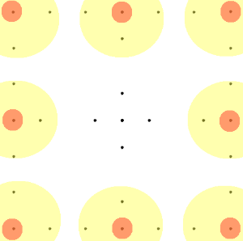
MySketch/createSubdivisionParamsSetCollection method is FALSE (switching off this transformation)The exterior anchors that are affected - (5, 6 & 7 are mutually exclusive - select one)
Symmetrical or asymmetrical 'spiking'
(9, 10, 11 & 12 are mutually exclusive - select one) 9. symmetricalSpike: Boolean (sibling anchors are equally affected: siblings are anchor points that share their location) - default is TRUE 10. spikeRight: Boolean (only the right sibling is affected) - default is FALSE 11. spikeLeft: Boolean (only the left sibling is affected) - default is FALSE 12. randomSpikeType: Boolean (randomly selects one of the above 3 options) - default is FALSE
The 'spiking' axes - (13, 14 & 15 are mutually exclusive - select one)
The amount of 'spiking'
new Range(-.2, .2)Control points follow anchor points (or not)
new Range(-1.5, 1.5)Control point 'squeezing'
new Range(-.5, .5)Convenience Methods
adjustStandardFields (p: Double, sF: Double, cpsF: Boolean, cpsFM: Double, squeeze: Boolean, squeezeF: Double) (probability, spike factor, control points follow, control points follow multiplier, squeeze factor)setWhichSpike(which: Int) (ExteriorAnchors.ALL, ...CORNERS, ...MIDDLES)setSpikeType(spikeType: Int) (ExteriorAnchors.SYMMETRICAL, ...RIGHT, ...LEFT, ...RANDOM)setSpikeAxis(spikeAxis: Int) (ExteriorAnchors.SPIKE_XY, ...SPIKE_X, ...SPIKE_Y)setRandomSpikeFactor(f: Range)setRandomCPsFollow(f: Range)setRandomCPsSqueeze(f: Range)Exterior Anchors Transform createSubdivisionParamsSetCollection() example
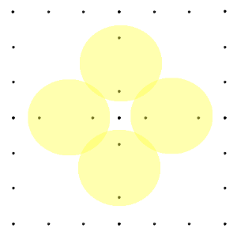
MySketch/createSubdivisionParamsSetCollection method is FALSE (switching off this transformation)QUADS (mainly relevant for quads - makes inner control points take account of external control points on outer line (typically to create matching curves))
If one set of multipliers is even and the other odd then they both move in same direction, if both even or both odd then then move in opposite direction
new Vector2D(.5,.5)new Vector2D(.1,.1)TRIS - mainly used by tris to avoid standard quad following (see just above)
new Range(-.5, .5)new Range(-.5, .5)Adjoining internal lines match (or not)
Mutuallly exclusive and onlhy relevant if commonLine is true (select one)
Convenience Methods
setQuadReferToOuter(approach: Int) (QUAD - shape inner curve in terms of adjacent outer curve, according to approach(InnerControlPoints.FOLLOW_OUTER, ...EXAGGERATE_OUTER, ...COUNTER_OUTER)setQuadMultipliers(inner: Vector2D, outer: Vector2D) (QUAD)setTriRatios(inner: Double, outer: Double) (TRI)setRandomTriRatios(inner: Range, outer: Range)(TRI)setCommonLine(common_type: Int) (TRI)Inner Control Points Transform createSubdivisionParamsSetCollection() example
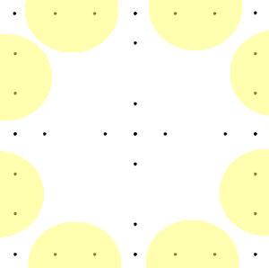
Two ways of calculating outside spline curvature :
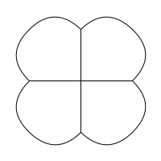
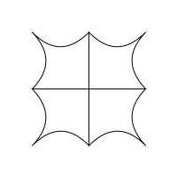
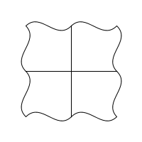
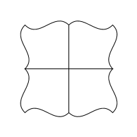
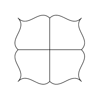
(top row: PUFF, PINCH, PUFF_PINCH_PUFF_PINCH)
(second row: PUFF_PINCH_PINCH_PUFF, PINCH_PUFF_PINCH_PUFF, PINCH_PUFF_PUFF_PINCH)
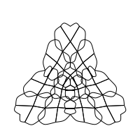
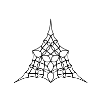
(Curve from centre positive, curve from centre negative - both over several iterations)
MySketch/createSubdivisionParamsSetCollection method is FALSE (switching off this transformation)new Vector2D(0,0)For calculating positions of control points along the outside line
new Vector2D(.4, .6)new Range(.1, .5)new Range(.5, .9)The remaining fields are curving focused.
Perpendicular curving:
new Range(.5, 3)Curve from centre curving:
new Vector2D(.2, -.5)new Range(-1, 1)new Range(-1, 1)Convenience Methods
setRandomLineSideRatio(innerRatio: Vector2D, outerRatio: Vector2D) (first control point on spline line ratio (distance from first anchor), second control point on spline line ratio (distance from first anchor))curvePerpendicular(prob: Double, cType: Int, lineRatio: Vector2D, cMultiplier: Range) (probability, curve type, line ratio, curve multiplier)curvePerpendicularRandomMultiplier(prob: Double, cType: Int, lineRatio: Vector2D, cRandomMultiplier: Range) (probability, , curve type, line ratio, random curve multiplier)curveFromCentre(prob: Double, cRatio: Vector2D) (probability, curve ratios)curveFromCentreRandom(prob: Double, cp1Ratio: Range, cp2Ratio: Range) (probability, curve ratios (control point 1), curve ratios (control point 2))Outer Control Points Transform createSubdivisionParamsSetCollection() example
var outerControlPoints: OuterControlPoints = new OuterControlPoints(true)
//outerControlPoints.curvePerpendicular(100, outerControlPoints.PUFF, new Vector2D(.33, .66), new Range(2, 2))
//outerControlPoints.curvePerpendicularRandomMultiplier(100, OuterControlPoints.PUFF, new Vector2D(.33, .66), new Range(2, 5))
outerControlPoints.curveFromCentre(100, new Vector2D(-.3, -.3))
transformSet += outerControlPoints
Urgently need a more efficient means of building complex subdivision parameters. Also need to save and load them from XML.